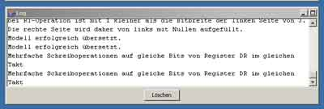

9. Das Logfenster

In diesem Fenster erscheinen alle Fehler und Warnungen die während des Kompilierens und Ausführens auftreten. Die Schaltfläche
Löschen
löscht alle bisherigen Ausgaben.
Zurück
Inhaltsverzeichnis